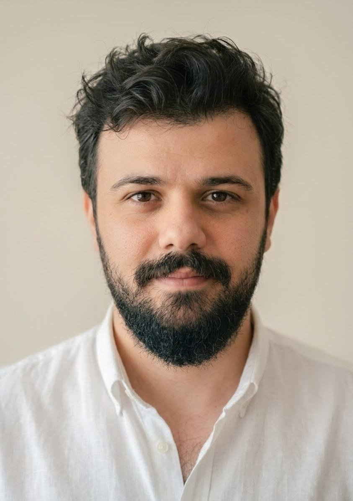

تنسيق يتمحور حول المريض
نستمع إلى احتياجات كل مريض وتفضيلاته وظروفه، ونُشرك مرافقيه أو أفراد عائلته في المراحل المناسبة من التخطيط متى رغب في ذلك.
فلسفة الوكالة
وكالة threeeight35° للسفر العلاجي هي خدمة مستقلة لتنسيق السفر العلاجي للمرضى من أستراليا والإمارات العربية المتحدة والأسواق الدولية الأخرى الذين يستكشفون العلاج في تركيا. نتولى الجانب العملي من الرحلة: نربط المرضى بمقدّمي رعاية صحية ومستشفيات مستقلة في إسطنبول، ونرتّب الاستشارات وعروض الأسعار، وننسّق الإقامة والتنقلات الخاصة والدعم باللغات العربية والإنجليزية والتركية خلال الإقامة.
يعكس اسمنا طريقة عملنا. فكما تحدّد الإحداثيات موقعاً بدقة، نسعى إلى أن نكون دقيقين وموثوقين وواضحين بشأن موقعك في كل خطوة. ومن الاستفسار الأول عبر خط التواصل لأستراليا والدول الأخرى أو خط الإمارات ودول الخليج حتى تنسيق المتابعة بعد العودة، يعمل المرضى مع منسّق مخصّص ويستلمون عروضاً مكتوبة ومفصّلة قبل الالتزام.
لسنا مقدّم رعاية صحية. نحن لا نشخّص ولا نصف ولا نوصي بأي علاج. ويُقدَّم كل تقييم سريري وكل رعاية طبية بشكل مستقل من قِبل أخصائيي رعاية صحية مرخّصين في تركيا. ونشجّع المرضى على مناقشة العلاج في الخارج مع طبيبهم المعتاد أو مع أخصائي رعاية صحية مناسب عند الاقتضاء.
رقم الأعمال الأسترالي (ABN): 31 329 961 078
أن نجعل السفر العلاجي الدولي أوضح وأفضل تنظيماً للمرضى وعائلاتهم، من خلال معلومات شفافة وتنسيق شخصي ودعم عملي، مع احترام الخصوصية وترك كل قرار سريري لأخصائيين طبيين مستقلين.
أن نكون اسماً محترماً في تنسيق السفر العلاجي الدولي، معروفاً بمستوى من الشفافية والرعاية يتيح للمرضى عبور الحدود لتلقي العلاج بثقة مبنية على معرفة واضحة.
نستمع إلى احتياجات كل مريض وتفضيلاته وظروفه، ونُشرك مرافقيه أو أفراد عائلته في المراحل المناسبة من التخطيط متى رغب في ذلك.
نقدّم عروض أسعار مكتوبة ومفصّلة، ونؤكّد ما تشمله الخدمة كتابياً، ولا نَعِد أبداً بنتائج طبية أو بإجراءات خالية من المخاطر.
نتعامل مع المعلومات الشخصية والصحية بعناية، ونقصر الوصول إليها على الموظفين المخوّلين، ولا نطلب من المرضى إرسال سجلات طبية أو صور سريرية عبر نماذج الموقع العامة.
نحن ننسّق، والأطباء المستقلون المرخّصون يتخذون كل قرار طبي.
نسعى إلى تنسيق موثوق يهتم بالتفاصيل في كل مرحلة من مراحل الرحلة.
نعامل كل مريض ومرافق باهتمام واحترام.

تعرّف على المؤسس
مؤسس وكالة threeeight35° للسفر العلاجي | أبوظبي
أقيم في أبوظبي منذ أكثر من 15 عاماً، وأتحدث الإنجليزية والعربية والتركية. أتخصص في التسويق والإنتاج، ولديّ خبرة في التصوير الفوتوغرافي. وقبل تأسيس وكالة threeeight35° للسفر العلاجي، عملت لمدة عامين في مجال السياحة العلاجية في إسطنبول، حيث اكتسبت خبرة في علاقات المرضى وتطوير الأعمال.
كشفت لي تلك التجربة مدى صعوبة تعامل المرضى الدوليين مع معلومات العلاج وعروض الأسعار وترتيبات السفر والتواصل عبر الحدود. ولهذا أسست threeeight35° لتقديم تجربة أوضح وأفضل تنسيقاً.
لست طبيباً، ولا أقدّم استشارات طبية ولا أوصي بأي علاج. يتمثل دوري في جعل رحلتك العلاجية واضحة ومنظّمة ومنسّقة بعناية من البداية إلى النهاية. أتولى التفاصيل العملية لرحلتك، بينما تبقى جميع القرارات السريرية من مسؤولية أخصائيي الرعاية الصحية المعالجين.